에너지관리기사 (2011-10-02 기출문제)
1과목: 연소공학
1. 연소관리에 있어서 과잉공기량 조절시 다음 중 최소가 되게 조절하여야 할 것은? (단, Ls : 배가스에 의한 열손실량, Li : 불완전연소에 의한 열손실량, Lc : 연소에 의한 열손실량, Lr : 열복사에 의한 열손실량일 때를 나타낸다.)
- Li
- Ls + Lr
- Ls + Li
- Li + Lc
(정답률: 80%)

2. 다음 조성의 발생로 가스를 15%의 과잉공기로 완전 연소 시켰을 때의 건연소가스량(Sm3/Sm3)은? (단, 발생로 가스의 조성은 CO 31.3%, CH4 2.4%, H2 6.3%, CO2 0.7%, N2 59.3% 이다.)
- 1.99
- 2.54
- 2.87
- 3.01
(정답률: 44%)
3. 디젤엔진에서 흡기온도가 상승하면 착화지연시간은 어떻게 되는가?
- 감소한다.
- 증가한다.
- 감소한 후 증가한다.
- 불변이다.
(정답률: 80%)
4. 가연성 액체에서 발생한 증기의 공기 중 농도가 연소범위내에 있을 경우 불꽃을 접근시키면 불이 붙는데 이 때 필요 최저 온도를 무엇이라고 하는가?
- 기화온도
- 인화온도
- 착화온도
- 임계온도
(정답률: 80%)
5. 다음 기체연료 중 고발열량(kcal/Sm3)이 가장 큰 것은?
- 고로가스
- 수성가스
- 도시가스
- 액화석유가스
(정답률: 80%)
6. 비중이 0.98(60°F/60°F)인 액체연료의 API도는?
- 10.157
- 10.958
- 11.857
- 12.888
(정답률: 46%)
7. 표준 상태인 공기 중에서 완전 연소비로 아세틸렌이 함유되어 있을 때 이 혼합기체 1L 당 발열량은 몇 kJ 인가?(단, 아세틸렌의 발열량은 1308kJ/mol 이다.)
- 4.1
- 4.6
- 5.1
- 5.6
(정답률: 54%)
8. 과잉공기량이 많을 때 일어나는 현상으로 옳은 것은?
- 배기가스에 의한 열손실이 감소한다.
- 연소실의 온도가 높아진다.
- 연료 소비량이 작아진다.
- 불완전연소물의 발생이 적어진다.
(정답률: 67%)
9. 중유의 점도(粘度)가 높아질수록 연소에 미치는 영향에 대한 설명 중 틀린 것은?
- 기름탱크로부터 버너까지의 송유가 곤란해진다.
- 버너의 연소상태가 나빠진다.
- 기름의 분무현상(Atomization)이 양호해진다.
- 버너 화구(火口)에 탄소(C)가 생긴다.
(정답률: 79%)
10. CH4 1mol이 완전 연소할 때의 AFR은 얼마인가?
- 9.5
- 11.2
- 15.8
- 21.3
(정답률: 41%)
11. 다음 중 열효율 향상 대책으로 볼 수 없는 것은?
- 되도록 불연속으로 조업할 수 있도록 한다.
- 손실열을 가급적 적게 한다.
- 장치의 설치조건과 운전조건을 일치시키도록 노력한다.
- 전열량이 증가되는 방법을 취한다.
(정답률: 82%)
12. 중유의 성질에 대한 설명 중 옳은 것은?
- 점도에 따라 1, 2, 3급 중유로 구분한다.
- 원소 조성은 H 가 가장 많다.
- 비중은 약 0.72 ~ 0.76 정도이다.
- 인화점은 약 60 ~ 150℃ 정도이다.
(정답률: 72%)
13. 다음 중 액체연료가 갖는 일반적인 특징이 아닌 것은?
- 연소온도가 높기 때문에 국부과열을 일으키기 쉽다.
- 발열량은 높지만 품질이 일정하지 않다.
- 화재, 역화 등의 위험이 크다.
- 연소할 때 소음이 발생한다.
(정답률: 74%)
14. 발열량이 5,000kcal/kg인 고체연료를 연소할 때 불완전연소에 의한 열손실이 5% 연소재에 의한 열손실이 5%이었다면 연소효율은 약 몇 % 인가?
- 80%
- 85%
- 90%
- 95%
(정답률: 73%)
15. 습식집진방식으로서 집진율은 비교적 우수하나 압력손실이 큰 집진형식은?
- 다단침강식
- 가압수식
- 백필터식
- 코트렐식
(정답률: 62%)
16. 내화재로 만든 화구에서 공기와 가스를 따로 연소실에 송입하여 연소시키는 방식으로 대형가마에 적합한 가스연료 연소장치는?
- 포트형 버너
- 방사형 버너
- 건타입형 버너
- 선회형 버너
(정답률: 74%)
17. 프로판가스 1kg 연소시킬 때 필요한 이론공기량은 약 몇 Sm3인가?
- 10.2
- 11.3
- 12.1
- 13.2
(정답률: 72%)
18. 석탄보일러에서 회분의 부착손상이 가장 심한 곳은?
- 과열기
- 공기예열기
- 절탄기
- 보일러 본체
(정답률: 72%)
19. 일산화탄소(CO) 1Sm3 를 이론공기량으로 완전 연소시켰을 때의 연소가스량(Sm3)은?
- 1.8
- 2.9
- 3.4
- 4.2
(정답률: 54%)
20. 연료비가 크면 나타나는 일반적인 현상이 아닌 것은?
- 고정탄소량이 증가한다.
- 불꽃은 짧은 단염이 된다.
- 매연의 발생이 적다.
- 착화온도가 낮아진다.
(정답률: 54%)
2과목: 열역학
21. 압력을 일정하게 유지하면서 15kg 의 이상 기체를 300K 에서 500K 까지 가열하였다. 엔트로피 변화는 몇 kJ/K 인가? (단, 기체상수는 0.189kJ/kgㆍK, 비열비는 1.289 이다.)
- 5.273
- 6.459
- 7.441
- 8.175
(정답률: 60%)
22. 표에 나타낸 물성치를 갖는 기체 0.1Kmol 의 온도를 298K에서 308K로 일정 압력 하에서 증가시키는 데 필요한 에너지는 몇 J 인가?
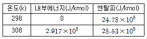
- 2.75 × 104
- 2.917 × 104
- 3.75 × 104
- 4.325 × 104
(정답률: 57%)
23. 정압과정(constant pressure process)에서 한 계(system)에 전달된 열량은 그 계의 어떠한 성질 변화와 같은가?
- 내부에너지
- 엔트로피
- 엔탈피
- 퓨개시티
(정답률: 55%)
24. 성능계수가 5 이며, 30kW 의 냉동능력을 가진 냉동장치의 이론 소요동력은 몇 kW인가?
- 5
- 6
- 30
- 150
(정답률: 71%)
25. 피스톤이 장치된 용기속의 온도 T1[K], 압력 P1[Pa], 체적 V1[m3] 의 이상기체 m[kg] 이 압력이 일정한 과정으로 체적이 원래의 2배로 되었다. 이 때 이상기체로 전달된 열량은? (단, Cv는 정적비열이다.)
- mCvT1
- 2mCvT1
- mCvT1 + P1V1
- mCvT1 + 2P1V1
(정답률: 66%)
26. 헬륨의 기체상수는 2.08kJ/kg·K 이고 정압비열 Cp 는 5.24kJ/kg·K 일 때 이 가스의 정적비열 Cv의 값은?
- 7.20kJ/kg·K
- 5.07kJ/kg·K
- 3.16kJ/kg·K
- 2.18kJ/kg·K
(정답률: 62%)
27. 카르노사이클을 온도(T)-엔트로피(S) 선도 및 압력(P)-체적(V) 선도로 표시하였을 때, 각 선도의 한 사이클에 대한 적분식들의 관계가 옳은 것은?
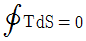
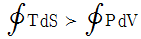
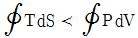
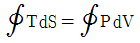
(정답률: 71%)
28. 어떤 열기관이 열펌프와 냉동기로 작동될 수 있다. 동일한 고온열원과 저온열원에서 작동될 때, 열펌프(heatpump)와 냉동기의 성능계수 COP 는 다음과 같은 관계식으로 표시될 수 있다. ( )안에 알맞은 값은?
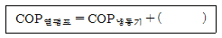
- 0.0
- 1.0
- 1.5
- 2.0
(정답률: 79%)
29. 랭킨사이클에서 각 지점의 엔탈피가 다음과 같을 때 사이클의 효율은 약 얼마인가?
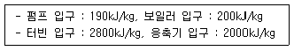
- 0.1
- 0.25
- 0.3
- 0.5
(정답률: 47%)
30. 교축과정(throttling process0에서 생기는 현상과 무관한 것은?
- 엔탈피 일정
- 압력 강하
- 온도 강하 또는 상승
- 엔트로피 일정
(정답률: 58%)
31. 랭킨(Rankine) 사이클에서 응축기의 압력을 낮출때 나타나는 현상으로 옳은 것은?
- 이론 열효율이 낮아진다.
- 터빈 출구의 증기건도가 낮아진다.
- 응축기의 포화온도가 높아진다.
- 응축기내의 절대압력이 증가한다.
(정답률: 57%)
32. 카르노사이클에서 공기 1kg 이 1사이클마다 하는 일이 100kJ 이고 고온 227℃, 저온 27℃의 사이에서 작용한다. 이 사이클의 열공급 과정 중에서 고온 열원에서의 엔트로피의 변화는 몇 kJ/K 인가?
- 0.2
- 0.44
- 0.5
- 0.83
(정답률: 36%)
33. 체적 V 와 온도 T 를 유지하고 있는 고압 용기에 이상기체가 들어 있다. 면적이 A 인 아주 작은 구멍을 통해 기체가 새고 있을 때 시간에 따른 용기 압력을 옳게 나타낸 것은? (단, 외기압은 충분히 낮다.)
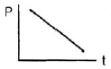
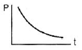
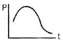
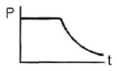
(정답률: 75%)
34. 다음 중 보일러수의 pH 범위로 가장 적당한 것은?
- 3 이하
- 5 ~ 6
- 10 ~ 11
- 13 이상
(정답률: 79%)
35. 공기 표준 디젤 사이클에서 압축비가 20이고 단절비(cut-off ratio)가 3 일 때의 열효율은 몇 % 인가? (단, 공기의 비열비는 1.4이다.)
- 60.6
- 64.8
- 69.8
- 70.6
(정답률: 46%)
36. 어느 습증기(wet stream)의 상태를 다음과 같은 상태량으로 표시하였다. 습증기의 상태를 나타내지 못하는 것은?
- 온도와 압력
- 온도와 비체적
- 압력과 비체적
- 압력과 건도
(정답률: 58%)
37. 그림은 공기 표준 0tto cycle 이다. 효율 η 에 관한 식으로 틀린 것은? (단, r 은 압축비, k 는 비열비이다.)
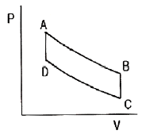
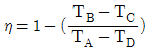
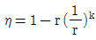
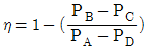
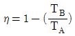
(정답률: 67%)
38. 이상기체를 가역단열 팽창시킨 후의 온도는?
- 처음상태보다 낮게 된다.
- 처음상태보다 높게 된다.
- 변함이 없다.
- 높을 때도 있고 낮을 때도 있다.
(정답률: 55%)
39. 카르노(Carnot) 냉동 사이클의 설명 중 틀린 것은?
- 성능계수가 가장 좋다.
- 실제적인 냉동 사이클이다.
- 카르노(Carnot) 열기관 사이클의 역이다.
- 냉동 사이클의 기준이 된다.
(정답률: 78%)
40. 방안의 온도가 25℃ 인데 온도를 낮추어 20℃ 에서 물방울이 생성되었다고 하면 방안의 온도가 25℃일 때의 상대습도는? (단, 20℃, 25℃ 에서의 포화 수증기압은 각각 2.23kPa, 3.15kPa 이다.)
- 0.708
- 0.724
- 0.735
- 0.832
(정답률: 38%)
3과목: 계측방법
41. 차압식 유량계에 있어 조리개 전후의 압력차이가 처음보다 2배 커졌을 때 유량은 어떻게 되는가? (단, Q1 는 처음 유량, Q2는 나중 유량이다.)
- Q2 = Q1
- Q2 = √2Q1
- Q2 = 2Q1
- Q2 = 4Q1
(정답률: 78%)
42. 열전대온도계의 재료로 사용되는 콘스탄탄(Constantan)은 어떤 금속의 합금인가?
- 철과 구리
- 로듐과 백금
- 구리와 니켈
- 철과 니켈
(정답률: 64%)
43. 자동연소 장치의 광전관 화염검출기가 정상적으로 작동하고 있는지를 간단히 점검할 수 있는 가장 좋은 방법은?
- 광전관 회로의 전류를 측정해 본다.
- 화염검출기(火炎檢出器) 앞을 가려 본다.
- 광전관 회로의 연결선을 제거해 본다.
- 파이로트 버너(Pilot Burner)에 점화하여 본다.
(정답률: 72%)
44. 조절계의 동작에는 연속, 불연속 동작을 이용한다. 다음 중 불연속 동작을 이용하는 것은?
- 뱅뱅동작
- 비례동작
- 적분동작
- 미분동작
(정답률: 71%)
45. 다음 중 사하중계(dead weight gauge)의 주된 용도는?
- 압력계 보정
- 온도계 보정
- 유체 밀도 측정
- 기체 무게 측정
(정답률: 72%)
46. 다음 중 접촉식 온도계가 아닌 것은?
- 저항온도계
- 방사온도계
- 열전온도계
- 유리온도계
(정답률: 77%)
47. 보일러 공기예열기의 공기유량을 측정하는데 가장 적합한 유량계는?
- 면적식 유량계
- 열선식 유량계
- 차압식 유량계
- 용적식 유량계
(정답률: 56%)
48. 온도의 정의정점 중 평형수소의 삼중점은 얼마인가?
- 13.80K
- 17.04K
- 20.24K
- 27.10K
(정답률: 69%)
49. 다음 중 정상편차에 대하여 옳게 나타낸 것은?
- 목표치와 제어량의 차
- 2개 이상의 양 사이에 어떤 비례관계를 갖는 편차
- 과도응답에 있어서 충분한 시간이 경과하여 제어편차가 일정한 값으로 안정되었을 때의 값
- 입력의 시간 미분값에 비례하는 편차
(정답률: 79%)
50. 다음 [그림]과 같이 수은을 넣은 차압계를 이용하는 액면계에 있어 수은면의 높이차(h)가 50.0mm 일 때 상부의 압력 취출구에서 탱크 내 액면까지의 높이(H)는 약 몇 mm 인가? (단, 액의 밀도(r)는 999kg/m3 이고, 수은의 밀도(ro)는 13550kg/m3 이다.)
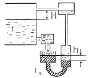
- 578
- 628
- 678
- 728
(정답률: 44%)
51. 단요소식(單要素式) 수위제어에 대한 설명으로 옳은 것은?
- 발전용 고압 대용량 보일러의 수위제어에 사용된다.
- 보일러의 수위만을 검출하여 급수량을 조절하는 방식이다.
- 수위조절기의 제어동작에는 PID 동작이 채용된다.
- 부하 변동에 의한 수위의 변화 폭이 아주 적다.
(정답률: 81%)
52. 압력계의 게이지압력과 절대압력에 관한 식을 표시한 것으로 옳은 것은? (단, 게이지압력은 A, 절대압력은 B, 대기압은 C 이다.)
- B = C ÷ A
- B = C × A
- B = A - C
- B = A + C
(정답률: 74%)
53. 다음 전자유량계에 대한 설명 중 틀린 것은?
- 도전성 유체에만 사용한다.
- 미소한 측정전압에 대하여 고성능 증폭기를 필요로한다.
- 압력손실이 높고 점도가 높은 유체나 슬러리(slurry)에는 사용할 수 없다.
- 유량계의 관내에 적당한 재료를 라이닝(lining)하므로 높은 내식성을 유지할 수 있다.
(정답률: 75%)
54. 산소의 농도를 측정할 때 기전력을 이용하여 분석, 계측하는 분석계는?
- 자기식 O2 계
- 세라믹식 O2 계
- 연소식 O2 계
- 밀도식 O2 계
(정답률: 71%)
55. 유량계의 교정방법 중 기체 유량계의 교정에 가장 적합한 방법은?
- 배런스를 사용하여 교정한다.
- 기준 탱크를 사용하여 교정한다.
- 기준 유량계를 사용하여 교정한다.
- 기준 체적관을 사용하여 교정한다.
(정답률: 72%)
56. 부르돈관 압력계로 측정한 압력이 5kg/cm2 이었다. 이 때 부유피스톤 압력계 추의 무게가 10kg 이고, 펌프 실린더의 직경이 8cm, 피스톤 지름이 4cm 라면 피스톤의 무게는 약 몇 kg 인가?
- 38.2
- 52.8
- 72.9
- 99.4
(정답률: 51%)
57. 열전대 온도계의 보호관으로 사용되는 다음 재료 중 상용 사용 온도가 높은 순으로 옳게 나열된 것은?
- 석영관 ＞ 자기관 ＞ 동관
- 석영관 ＞ 동관 ＞ 자기관
- 자기관 ＞ 석영관 ＞ 동관
- 동관 ＞ 자기관 ＞ 석영관
(정답률: 73%)
58. 고온 물체가 발산한 특정 파장의 휘도가 비교용 표준전구의 필라멘트 휘도와 같을 때 필라멘트에 흐른전류로부터 온도를 측정하는 것은?
- 열전온도계
- 광고온계
- 색온도계
- 방사온도계
(정답률: 78%)
59. 바이메탈 온도계의 특징에 대한 설명으로 틀린 것은?
- 히스테리시스 오차가 발생하지 않는다.
- 온도변화에 대하여 응답이 빠르다.
- 작용하는 힘이 크다.
- 온도자동 조절이나 온도보정 장치에 이용된다.
(정답률: 68%)
60. 주로 낮은 압력을 측정하는데 사용되는 피라니 게이지(piranl gauge)의 원리는 압력에 따른 기체의 어떤 성질의 변화를 이용한 것인가?
- 비중
- 열전도
- 비열
- 압축인자
(정답률: 66%)
4과목: 열설비재료 및 관계법규
61. 글로브밸브(globe valve)에 대한 설명 중 틀린 것은?
- 유량조절이 용이하므로 자동조절밸브 등에 응용시킬 수 있다.
- 유체의 흐름방향이 밸브몸통 내부에서 변한다.
- 디스크 형상에 따라 앵글밸브, Y형밸브, 니들밸브 등으로 분류된다.
- 조작력이 적어 고압의 대구경 밸브에 적합하다.
(정답률: 88%)
62. 다음 중 에너지사용계획의 수립대상 사업이 아닌 것은?
- 항만건설사업
- 고속도로건설사업
- 철도건설사업
- 관광단지개발사업
(정답률: 69%)
63. SK 34는 몇 도까지 견딜 수 있는가?
- 1350℃
- 1580℃
- 1750℃
- 1930℃
(정답률: 55%)
64. 보온재의 시공방법에 대한 설명으로 틀린 것은?
- 물로 반죽하여 시공하는 보온재의 1차 시공시 보온재의 두께는 50mm 가 적당하다.
- 판상 보온재를 사용할 경우 두께가 75mm 를 초과하는 경우에는 층을 두개로 나누어 시공한다.
- 물로 반죽하는 보온재의 2차 시공시는 수분이 보온재의 1~1.5배 정도 남도록 건조시킨 후 바른다.
- 내화벽돌을 사용할 경우 일반보온재를 내층에 내화 벽돌은 외층으로 하여 밀착 시공한다.
(정답률: 72%)
65. 샤모트(chamotte) 벽돌에 대한 설명으로 옳은 것은?
- 일반적으로 기공률이 크고 비교적 낮은 온도에서 연화되며 내스폴링성이 좋다.
- 흑연질 등을 사용하며 내화도와 하중연화점이 높고 열 및 전기전도도가 크다.
- 내식성과 내마모성이 크며 내화도는 SK 35 이상으로 주로 고온부에 사용된다.
- 하중 연화점이 높고 가소성이 커 염기성 제강로에 주로 사용된다.
(정답률: 56%)
66. 열사용기자재 관리규칙에 대한 내용 중 틀린 것은?
- 계속 사용 검사는 해당 연도 말까지 연기할 수 있으며 검사의 연기를 받으려는 자는 검사 대상기기 검사 연기 신청서를 에너지관리공단이사장에게 제출하여야 한다.
- 에너지관리공단이사장은 검사에 합격한 검사 대상기기에 대해서 검사 신청인에게 검사일로부터 7일 이내에 검사증을 발급하여야 한다.
- 검사대상기기 조종자의 선임신고는 신고 사유가 발생한 날로부터 20일 이내에 하여야 한다.
- 검사 대상기기에 대한 폐기 신고는 폐기한 날로부터 15일 이내에 에너지관리공단이사장에게 신고하여야한다.
(정답률: 78%)
67. 노재의 하중연화점을 측정하는 방법으로 옳은 것은?
- 소정의 온도에서 압축강도를 측정한다.
- 하중을 일정하게 하고 온도를 높이면서 그 하중에 견디지 못하고 변형하는 온도를 측정한다.
- 하중과 온도를 동시에 변화시키면서 변형을 측정한다.
- 하중과 온도를 일정하게 하고 일정시간 후의 변형을 측정한다.
(정답률: 78%)
68. 에너지 관련법에서 정의하는 용어에 대한 설명 중 틀린 것은?
- 에너지사용자란 에너지 사용시설의 소유자 또는 관리자를 말한다.
- 에너지사용시설이라 함은 에너지를 사용하는 공장, 사업장 등의 시설이나 에너지를 전환하여 사용하는 시설을 말한다.
- 에너지공급자라 함은 에너지를 생산, 수입, 전환, 수송, 저장, 판매하는 사업자를 말한다.
- 연료라 함은 석유, 석탄, 대체에너지 기타 열 등으로 제품의 원료로 사용되는 것을 말한다.
(정답률: 67%)
69. 두께 230mm의 내화벽돌이 있다. 내면의 온도가 320℃이고 외면의 온도가 150℃일 때 이 벽면 10m2에서 매 시간당 손실되는 열량은 약 몇 kcal 인가? (단, 내화벽돌의 열전도율은 0.96kcal/m.h.℃ 이다.)
- 710
- 1632
- 7096
- 14391
(정답률: 47%)
70. 에너지 총 조사는 몇 년 주기로 시행하는가?
- 2년
- 3년
- 4년
- 5년
(정답률: 72%)
71. 염기성 슬래그에 대한 내침식성이 가장 큰 내화물은?
- 샤모트질 내화로재
- 마그네시아질 내화로재
- 납석질 내화로재
- 고알루미나질 내화로재
(정답률: 72%)
72. 다음 중 터널요에 대한 설명으로 옳은 것은?
- 예열, 소성, 냉각이 연속적으로 이루어지며 대차의 진행방향과 같은 방향으로 연소가스가 진행된다.
- 소성시간이 길기 때문에 소량생산에 적합하다.
- 인건비, 유지비가 많이 든다.
- 온도조절의 자동화가 쉽지만 제품의 품질, 크기, 형상 등에 제한을 받는다.
(정답률: 64%)
73. 에너지이용합리화 기본계획에 포함되지 않은 것은?
- 에너지이용합리화를 위한 기술개발
- 에너지의 합리적인 이용을 통한 공해성분(SOx, NOx)의 배출을 줄이기 위한 대책
- 에너지이용합리화를 위한 가격예고제의 시행에 관한 사항
- 에너지이용합리화를 위한 홍보 및 교육
(정답률: 60%)
74. 에너지사용계획에 대한 검토결과 공공사업주관자가 조치 요청을 받은 경우, 이를 이행하기 위하여 제출하는 이행계획에 포함되어야 할 내용이 아닌 것은?
- 이행 주체
- 이행 방법
- 이행 장소
- 이행 시기
(정답률: 84%)
75. 구리합금 용해용 도가니로에 사용될 도가니의 재료로 가장 적합한 것은?
- 흑연질
- 점토질
- 구리
- 크롬질
(정답률: 63%)
76. 제강 평로에서 채용되고 있는 배열회수 방법으로서 배기가스의 현열을 흡수하여 공기나 연료가스 예열에 이용될 수 있도록 한 장치는?
- 축열기
- 환열기
- 폐열 보일러
- 판형 열교환기
(정답률: 79%)
77. 석유환산계수란 에너지원별 발열량을 1kg 당 몇 kcal로 환산한 값을 말하는가?
- 1,000
- 10,000
- 100,000
- 1,000,000
(정답률: 65%)
78. 냉, 난방온도 제한 온도의 기준으로 판매시설 및 공항의 경우 냉방온도는 몇 ℃ 이상으로 하여야 하는가?
- 24
- 25
- 26
- 27
(정답률: 64%)
79. 에너지관리기사의 자격을 가진 자가 운전할 수 있는 범위의 기준은?
- 용량이 10t/h를 초과하는 보일러
- 용량이 30t/h를 초과하는 보일러
- 용량이 50t/h를 초과하는 보일러
- 용량이 100t/h를 초과하는 보일러
(정답률: 73%)
80. 다음 중 내화물의 구비조건으로 틀린 것은?
- 사용시 변형이 일어나지 않아야 한다.
- 내마모성 및 내침식성이 뛰어나야 한다.
- 재가열시에 수축이 크게 일어나야 한다.
- 상온에서 압축강도가 커야 한다.
(정답률: 78%)
5과목: 열설비설계
81. 외기온도가 20℃ 일 때 표면온도 70℃ 인 관표면에서의 복사에 의한 열전달율은 약 몇 kcal/m2·h·k 인가? (단, 복사율은 0.8 이다.)
- 0.2
- 5
- 10
- 12
(정답률: 47%)
82. 과열증기의 특징에 대한 설명으로 옳은 것은?
- 관내 마찰저항이 증가한다.
- 응축수로 되기 어렵다.
- 표면에 고온부식이 발생하지 않는다.
- 표면의 온도를 일정하게 유지한다.
(정답률: 62%)
83. 금속판을 전열체로 하여 유체를 가열하는 방식으로 열팽창에 대한 염려가 없고 플랜지이음으로 되어 있어 내부수리가 용이한 열교환기 형식은?
- 유동두식
- 플레이트식
- 융그스크럼식
- 스파이럴식
(정답률: 67%)
84. 보일러의 부속장치 중 여열장치가 아닌 것은?
- 과열기
- 송풍기
- 재열기
- 절탄기
(정답률: 82%)
85. 다음 중 역화의 원인이 아닌 것은?
- 흡입통풍이 부족한 경우
- 연료의 양이 부족한 경우
- 연료밸브를 급히 열었을 경우
- 점화 시 착화가 늦어졌을 경우
(정답률: 61%)
86. 열정산에 대한 설명으로 틀린 것은?
- 원칙적으로 정격부하 이상에서 정상상태로 적어도 2시간 이상의 운전결과에 따른다.
- 발열량은 원칙적으로 사용시 원료의 고발열량으로 한다.
- 최대출열량을 시험할 경우에는 반드시 최대부하에서 시험을 한다.
- 증기의 건도는 98% 이상인 경우에 시험함을 원칙으로 한다.
(정답률: 76%)
87. 구조상 고압에 적당하여 배압이 높아도 작동하며, 드레인 배출온도를 변화시킬 수 있고 증기누출이 없는 트랩은?
- 디스크(Disk)식
- 플로트(Float)식
- 상향 버킷(Bucket)식
- 바이메탈(Bimetal)식
(정답률: 51%)
88. 보일러의 용기에 판 두께가 12mm, 용접길이가 230cm인 판을 맞대기 용접했을 때 45000kg의 인장하중이 작용한다면 인장응력은 약 몇 kg/cm2 인가?
- 100
- 145
- 163
- 255
(정답률: 63%)
89. 급수에서 ppm 단위를 사용할 때 이에 대하여 가장 잘 나타낸 것은?
- 물 1cc 중에 함유한 시료의 양을 mg으로 표시한것
- 물 100cc 중에 함유한 시료의 양을 mg으로 표시한 것
- 물 1L 중에 함유한 시료의 양을 g으로 표시한 것
- 물 1L 중에 함유한 시료의 양을 mg으로 표시한것
(정답률: 80%)
90. 어느 가열로에서 노벽의 상태가 다음과 같을 때 노벽을 관류하는 열량은 약 몇 kcal/h 인가? (단, 노벽의 상하 및 둘레가 균일한 것으로 보며 평균방열면적 : 120.5m2, 노벽두께 : 45cm, 내벽표면온도 : 1300℃, 외벽표면온도 : 175℃ 노벽재질의 열전도율 : 0.1[kcal/m·h·℃] 이다.)
- 301.25
- 30125
- 394.97
- 39497
(정답률: 50%)
91. 다음 [보기]에서 설명하는 보일러 보존방벙은?
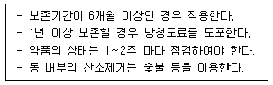
- 건조보존법
- 만수보존법
- 질소건조법
- 특수보존법
(정답률: 76%)
92. 이온교환수지 재생에서의 재생방법으로 적합한 것은?
- 양이온교환수지는 가성소다, 암모니아로 재생한다.
- 양이온교환수지는 소금 또는 염화수소, 황산으로 재생한다.
- 음이온교환수지는 소금 또는 황산으로 재생한다.
- 음이온교환수지는 암모니아 또는 황산으로 재생한다.
(정답률: 56%)
93. 이온 교환체에 의한 경수의 연화 원리를 가장 잘설명한 것은?
- 수지의 성분과 Na형의 양이온이 결합하여 경도성분이 제거되기 때문이다.
- 산소 원자와 수지가 결합하여 경도 성분이 제거되기 때문이다.
- 물속의 음이온과 양이온이 동시에 수지와 결합하여 제거되기 때문이다.
- 수지가 물속의 모든 이물질과 결합하기 때문이다.
(정답률: 73%)
94. 보일러에서 발생할 수 있는 손실 중 가장 큰 것은?
- 그을음(Soot)에 의한 손실
- 미연가스에 의한 손실
- 복사 및 전도에 의한 손실
- 배기 손실
(정답률: 59%)
95. 보일러 드럼(drum)의 내압을 받는 동체에 생기는 응력 중 길이방향의 인장응력과 원둘레방향의 인장응력의 비는?
- 2 : 1
- 1 : 2
- 4 : 1
- 1 : 4
(정답률: 59%)
96. 랭카셔 보일러에 대한 설명으로 틀린 것은?
- 노통이 2개이다.
- 부하변동시 압력변화가 적다.
- 전열면적이 적어 효율이 비교적 낮다.
- 급수처리가 까다롭고 가동 후 증기발생시간이 길다.
(정답률: 56%)
97. 원통보일러에서 동체의 내경이 2300mm라 할 때 동체의 최소 두께는 얼마 이상이어야 하는가?
- 6mm
- 8mm
- 10mm
- 12mm
(정답률: 58%)
98. 입형 횡관 보일러의 안전저수위로 가장 적당한 것은?
- 하부에서 75mm 지점
- 횡관 전길이의 1/3 높이
- 화격자 하부에서 100mm 지점
- 화실 천장판에서 상부 75mm 지점
(정답률: 71%)
99. 노내의 온도가 900℃에 달했을 때 300×600mm의 노 문을 열었다. 이 때 노 문을 통한 방사전열 손실 열량은 약 몇 kcal/h 인가? (단, 실내온도는 25℃, 화염의 방사율은 0.9 이다.)
- 12,900
- 13,900
- 14,900
- 15,900
(정답률: 33%)
100. 2중관 단일통과 열교환기의 외관에서 고온유체의 입구온도는 140℃ 이며, 출구의 온도는 90℃ 이었다. 또한, 내관의 저온유체의 입구온도는 40℃ 이며, 출구 온도는 70℃ 이었을 때 향류인 경우 평균온도차는 약얼마인가? (단, 열교환 중 응축은 발생하지 않는다.)
- 49.7
- 59.4
- 69.7
- 79.4
(정답률: 43%)